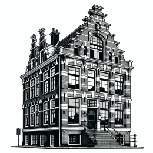

{# Status Bar #} {% include 'import_status_bar.html'%}


Anno 1600
SINGEL 140-142
Distance to ??? meters
Residential building
Hendrick de Keyser
Stepped gable
This house is called De Dolphijn. It is one of three examples in Amsterdam of an early 17th century house with side house (the predecessor of the double house). The second resident, Frans Banninck Cocq, was a lieutenant of the militia in 1635 and in that capacity he was immortalized by Rembrandt in 1642 in the 'Night Watch'.

TIMELINE
{# Timeline line #}
1600
Build
1609
Resident: Volckert Overlander
1630
Resident: Frans Banninck Cocq
1679
Division of 2 houses: De Vergulde Dolphijn & De Kleynne
Dolphijn
1863
Gable top of right house replaced by frame gable
1967
Restoration + reconstruction stepped gable
Now
Residential building
Side scroll to see all images
4 pictures uploaded
7 timeline entries
2 tags added
1 audio guide added
Description has between 250 and 450 characters
{% include 'cancel-button.html' %} {% include 'previous-button.html' %}
Publish